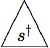
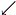
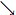
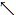
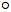
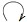
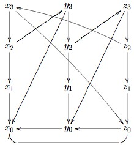
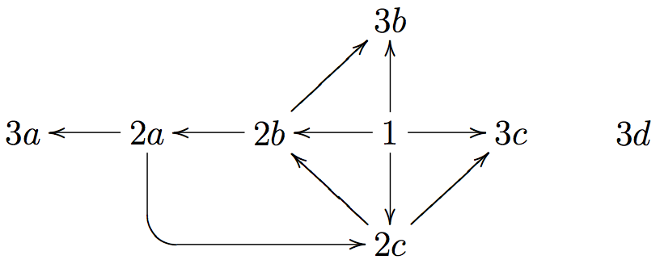
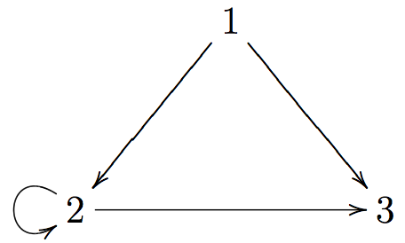
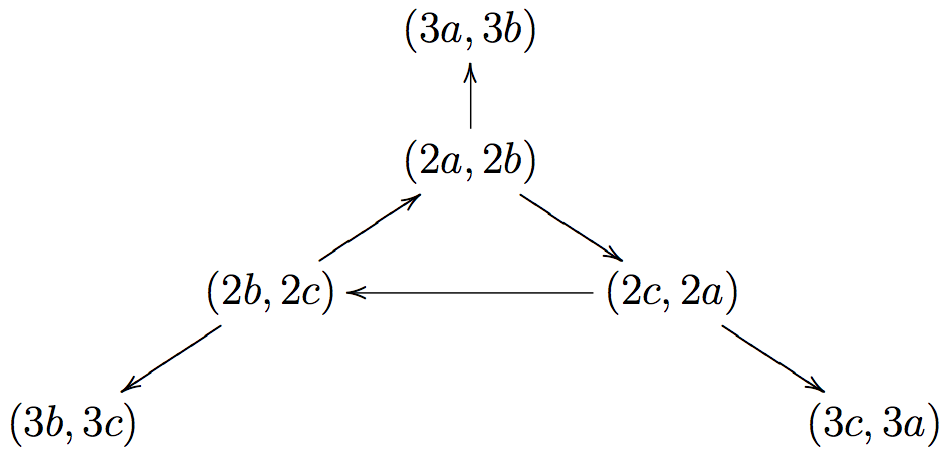

Non-wellfounded Set Theory
This entry is about two kinds of circularity: object circularity, where an object is taken to be part of itself in some sense; and definition circularity, where a collection is defined in terms of itself. Instances of these two kinds of circularity are sometimes problematic, and sometimes not. We are primarily interested in object circularity in this entry, especially instances which look problematic when one tries to model them in set theory. But we shall also discuss circular definitions.
The term non-wellfounded set refers to sets which contain themselves as members, and more generally which are part of an infinite sequence of sets each term of which is an element of the preceding set. So they exhibit object circularity in a blatant way. Discussion of such sets is very old in the history of set theory, but non-wellfounded sets are ruled out of Zermelo-Fraenkel set theory (the standard theory) due to the Foundation Axiom (FA). As it happens, there are alternatives to this axiom FA. This entry is especially concerned with one of them, an axiom first formulated by Marco Forti and Furio Honsell in a 1983 paper. It is now standard to call this principle the Anti-Foundation Axiom (AFA), following its treatment in an influential book written by Peter Aczel in 1988.
The attraction of using AFA is that it gives a set of tools for modeling circular phenomena of various sorts. These tools are connected to important circular definitions, as we shall see. We shall also be concerned with situating both the mathematics and the underlying intuitions in a broader picture, one derived from work in coalgebra. Incorporating concepts and results from category theory, coalgebra leads us to concepts such as corecursion and coinduction; these are in a sense duals to the more standard notions of recursion and induction.
The topic of this entry also has connections to work in game theory (the universal Harsanyi type spaces), semantics (especially situation-theoretic accounts, or others where a “world” is allowed to be part of itself), fractals sets and other self-similar sets, the analysis of recursion, category theory, and the philosophical side of set theory.
- 1. Circular Phenomena in Set Theory
- 2. The Foundation and Anti-Foundation Axioms
- 3. Using AFA
- 4. Comparing Foundation and Anti-Foundation
- Bibliography
- Academic Tools
- Other Internet Resources
- Related Entries
1. Circular Phenomena in Set Theory
It is difficult to say in a general way what makes a definition circular. In this entry we are concerned exclusively with mathematical definitions of various sorts. Consider the equation x = ½x + 1. Is this a circular definition of the number 2? In a sense, it is just that: a number has been defined in terms of itself. But there is nothing problematic about this equation, and so one may wonder why this is in the same class of equations as x = x + 1, or x = x. In the set theoretic setting, we often employ circular definitions and characterizations of sets and classes. For example, the collection HF of hereditarily finite sets may be characterized by
(1) HF is the set of all x such that x is a finite subset of HF.
With a bit of work, it can be shown that (1) defines a unique set in standard set theory ZFC. (1) is more of a characterization than a textbook definition, however. In other words, if one were presented with (1) as a putative definition, then the first step in understanding it would be to “straighten out” the circularity by providing a different definition D of a set, then to check that every set satisfying D satisfies the property defining HF, and vice-versa.
It is easier to think about circular objects than circular definitions. Even so, it will be useful in reading this entry to keep circular definitions in mind. The most conspicuous form of object circularity would be a set having itself as an element; even worse would be a set x such that x = {x}. For those with a background in standard set theory, such sets are ruled out by the axioms in the first place, and in the second it is not clear why one would want to change the axioms in order to admit them. And if one does take the drastic step of altering the axioms of a well-established theory, what changes? This entry is an extended discussion of this matter, and related ones.
1.1 Streams
Many of the ideas in this entry may be illustrated using streams. A stream of numbers is an ordered pair whose first coordinate is a number and whose second coordinate is again a stream of numbers. The first coordinate is called the head, and the second the tail. The tail of a given stream might be different from it, but again, it might be the very same stream. For example, consider the stream s whose head is 0 and whose tail is s again. Thus the tail of the tail of s is s itself. We have s = ⟨0, s⟩ , s = ⟨0, ⟨0, s⟩ ⟩ , etc. This stream s exhibits object circularity. It is natural to “unravel” its definition as:
(0,0,…,0,…)
It is natural to understand the unraveled form as an infinite sequence; standardly, infinite sequences are taken to be functions whose domain is the set N of natural numbers. So we can take the unraveled form to be the constant function with value 0. Whether we want to take the stream s described above to be this function is an issue we want to explore in a general way in this entry. Notice that since we defined s to be an ordered pair, it follows from the way pairs are constructed in ordinary mathematics that s will not itself be the constant sequence 0.
One way to define streams is with systems of equations for them. For example, here is such a system:
(2) x ≈ ⟨0, y⟩ y ≈ ⟨1, z⟩ z ≈ ⟨2, x⟩
We should comment on the ≈ notation here. We are concerned with modeling various types of ordinary mathematical objects in set theory, and one kind of object that we want to model will be that of a system of equations. This is an unusual thing to do. In anticipation of things to come, we use the ≈ sign for equations we would like to solve. So in our discussion of x = ½x + 1 above, we would prefer to write x ≈ ½x + 1. The point is that ‘x’ here is a symbol, but whatever we take symbols to be, it will almost never be the case that the symbol x is identical to the expression ‘½x + 1’ or to anything related to it. For the solution to an equation or a system of them, we will use a “dagger” to refer to the solution. Thus for this equation, x† = 2; the reason that 2 satisfies the equation is that 2 = ½(2)+ 1 (and here we use = rather than ≈).
Returning to equation (2), we take it to define streams x†, y†, and z†. These satisfy equations:
x† = ⟨0, y†⟩ y† = ⟨1, z†⟩ z† = ⟨2, x†⟩
These streams then have unraveled forms. For example, the unraveled form of y† is (1,2,0,1,2,0,…).
There is a natural operation of “zipping” two streams. Also called “merging”, it is defined by
(3) zip(s, t) = ⟨ head(s), zip(t, tail(s)) ⟩
So to zip two streams s and t one starts with the head of s, and then begins the same process of zipping all over again, but this time with t first and the tail of s second. For example, if x†, y†, and z† are the solutions to the system in equation (2) above, then we might wish to consider, for example, zip(x†, y†). In unraveled form, this is
(0,1,1,2,2,0,0,1,1,2,2,0,…).
But please note that our definition of zip does not work by recursion as one might expect; for one thing, there are no “base cases” of streams.
We can even ask about solving systems of equations written in terms of zip. It is easy to see that an equation like x = zip(x, x) is satisfied by all and only the constant streams. One like
x = zip(head(x) + 1, x)
has no solutions whatsoever. But if we do things right, we can define very interesting streams. For example, consider
(4) x ≈ ⟨1, zip(x, y)⟩ y ≈ ⟨0, zip(y, x)⟩
The system has a unique solution. The unraveled form of x† begins as
(1,1,0,1,0,0,1,1,0,0,1,0,1,1,0,1,0,…)
that of y† begins
(0,0,1,0,1,1,0,0,1,1,0,1,0,0,1,0,1,…).
The first of these is a famous sequence, the Thue-Morse sequence t (actually x† = tail(t).)[1]
1.1.1 The reduction of streams to functions
We have been careful to emphasize the difference between streams as we originally spoke of them and their unraveled form as functions on the natural numbers. At this point we want to look at this matter more closely.
Before we turn to the details, let us consider the parallel matter of sequences construed as functions on the natural numbers. Anyone who teaches about (infinite) sequences of some sort, say sequences of integers or real numbers, may at some point need to say what a sequence actually is. Surely this is not done very often in elementary presentations: usually one would give examples instead of a formal definition, or illustrate what sequences are for by using them in some way or other. In any case, it happens that in the usual set-theoretic modeling of mathematics, sequences of real numbers would be taken to be functions from the set of natural numbers to the set of real numbers. So we have a reduction of one kind of object, sequences, to another, functions. Of course, functions are then reduced to sets of ordered pairs, ordered pairs to sets of a certain form, natural numbers to sets of yet another form, and real numbers in their own way. Concerning this kind of reduction, we should always ask whether it is necessary or silly, and whether it is useful to those using the mathematical objects in the first place. All of this is worth keeping in mind as we turn back to the sequences.
Let N∞ be the set of streams of natural numbers, and let NN be the set of functions from N to N. The reduction employs two functions
φ : N∞ → NN ψ : NN → N∞
defined as follows: For φ, we first take a stream s to a function fs : N → N∞. This time we use recursion:
fs(0) = s fs(n+1) = tail(fs(n))
Then from f we get a function φ(s) : N → N by g(n) = head(fs(n)). This defines φ, the precise definition of what we spoke of earlier by the name unraveling. In the other direction, we need infinite systems of equations. Given a function f : N → N, consider
(5) x0 = ⟨f(0), x1⟩ x1 = ⟨f(1), x2⟩ … xn = ⟨f(n), xn+1⟩ …
Then this system has a solution, and we take ψ(f) = x0†. It is then possible to show that the composition in one direction, ψ ⋅ φ , is the identity on N∞ and the other composition φ ⋅ ψ is the identity on NN. In plainer terms, we can pass from streams to functions on numbers, and we can also go the other way.
At this point, we can ask questions about the reduction. The first question that comes to mind concerns the ontological status of the entities:
Let A be a collection of abstract objects (say functions from natural numbers to natural numbers), and suppose that one believes that the objects in A exist. Let B be a different collection of abstract objects. Suppose that A and B correspond in a natural way, and that everything one says about objects in B could well be said about their correspondents in A, perhaps using different language. Should one believe that the objects in B also exist?
Asking this about streams and functions on N is no different than asking it for any other kind of reduction of mathematical objects. Any discussion of it would take us to issues in the philosophy of mathematics that go beyond our goals in this entry. However, there are two additional points to be made on this matter.
First, the standard modeling of pairs in set theory[2] would have us believe that from the beginning of this section onwards, we have been talking about things which do not exist: as we have literally defined them, there are no streams of numbers whatsoever! We discuss this at length in Section 2.2.1, when we talk about the Foundation Axiom of set theory. The point is is that this axiom forbids object-level circularity in a way that precludes streams in the exact form that we have them. Thus if one wants to model the intuitive notion of a stream as we have introduced it, one would need to say something like: “By a stream, we mean a function on numbers. We adopt special notation to make it look like streams are pairs of a certain sort, but deep down they are just functions on numbers.”
Continuing with questions about the reduction of streams to functions, we can ask whether there is any conceptual difference using streams as opposed to functions. Certainly these represent different points of view, and for this reason it should be useful to have both available. To see the difference, let us return to the matter of zipping streams. Done in terms of functions f, g : N → N, the zipped version would be
zip(f, g)(n) = { f(n/2)
g((n−1)/2))if n is even
if n is odd
It would be harder to use this to turn equation (4) into the definition of two sequences by recursion.[3] The upshot is that we can start to see some kind of difference when we use one kind of representation instead of another. And this brings us to our second point on the reduction of streams to functions: conceptual differences worth exploring may be hidden under the surface of such a reduction.
At this point, we are done with our discussion of streams. Of course we shall revisit them in later sections to illustrate various points. We also broadly foreshadow the main points of this entry:
- By changing the usual axioms of set theory, one can model circularly defined streams and other objects in a way which is closer to the intuition that one has about them. In particular, it is possible to work with object-level circularity in a relatively consistent set theory, and there may be reasons why one would want to do so.
- In the changed theory, we also find different results on collections defined in terms of themselves. We have already seen such a collection, HF from (1). The status of circular definitions changes when one alters the set theory, and this leads to a broader examination of several issues.
- There is also a deeper conceptual issue going far beyond set theory related to top-down vs. bottom-up treatments of various phenomena.
1.2 Infinite trees
We want to move from streams to a more complicated example, infinite trees. Some of the points that we make will be closely related to what we have seen for streams, and some will raise new issues.
Here is a class of objects which we shall call trees:[4]
- The variables x and y alone are trees.
- If t is a tree, then adding a single node labeled • as a new root with t as its only subtree gives a tree.
- If s and t are trees, then adding a single node labeled * as a new root with s as the left subtree and t as the right subtree again gives a tree.
- A tree is that which can be obtained by applying the operations any number of times (including infinite applications).
Trees may be specified by tree systems (of equations). Here is one such system:
(6)
s ≈
* / \ t u
t ≈ •
|
s
u ≈
* / \ x y
Again, we use the ≈ notation in variables for which we want to solve, and we superscript variables with a dagger in the solution. In this case, the one and only solution of this system might be pictured as
s† =
* / \ • * / / \ * x y / \ • * / / \ … x y
t† = •
|

u† =
* / \ x y
It will be useful to recast the definition of our trees in terms of pairs and triples:
- The symbols x and y alone are trees.
- If t is a tree, then ⟨•, t⟩ is a tree.
- If s and t are trees, then ⟨*, s, t⟩ is a tree.
- Trees may be “infinitely deep”.
Then our system above is
s ≈ ⟨*, t, u⟩ t ≈ ⟨•, s⟩ u ≈ ⟨*, x, y⟩
So now we have something that looks more like what we have seen with streams. But with streams we had an unraveled form, and so we might wonder what the unraveled form of trees is. To some extent, it would be the pictures that we have already seen. In particular, one could take a tree as we have defined them and give a description of how one would construct the picture. (The full construction would take forever, of course, but the same is true of our work on streams.) Conversely, given a picture, one could set down a tree system for it, where a “tree system” is a system of equations as in equation (6). (In general, the tree system would be infinite, but if you find a regular structure in the picture, then the system could be finite.)
On the other hand, pictures are not entirely respectable as standard mathematical objects, despite the work that has gone on and continues to go on to rehabilitate them. For work on trees, one would need a more complicated set of definitions. We are not going to present any of this.
More ‘cheating’. Let Tr be the set of trees that we have been discussing. Then our definition in terms of Tr would have:
(7) Tr = {x, y} ∪ ({•} × Tr) ∪ ({*} × Tr × Tr).
Now again the standard modeling in set theory gives us a problem: one can prove in ZF set theory that Tr has no solution whatsoever. And this runs afoul of our pictures and intuition. The standard way out is to change the equals sign = in (7) to something else. For most mathematical work this is perfectly fine, but it is the kind of move we explore in this entry.
1.3 Hypersets
Let us turn from streams and trees to sets. Before presenting some analogs to what we have just seen, at pictures of sets. To make the discussion concrete, consider the set:
x = {∅, {{∅}, ∅}}
Let us call this set x. We want to draw a picture of this set, so we start with a point which we think of as x itself. Since x has two elements, we draw add two children:
x   y z
Again, we draw arrows on behalf of the members. We take y to be ∅ and z to be {{∅}, ∅}. We do not add any children of y because it is empty. But we want to add two children to z, one for w = {∅} and one for ∅. So we have
x y ← z ↓ w
We conclude by putting an arrow from w to y, since ∅ ∈ {∅}.
x y ← z  ↓ w
Now we want to forget the identity of the nodes. We could either trade in the four sets that we used for numbers (to mention just one way), or else finesse the issue entirely. We would get one of the pictures below:
1 2 ← 3 ↓ 4
 ← ↓
Incidentally, in building this graph, we allowed ourselves to share the node y both times we came to ∅. It would be possible to avoid doing this, using different nodes. The end result would be a tree:
↓
A graph is a pair (G,→), where → is a relation on G (a set of ordered pairs from G). The idea is that we want to think of a graphs as notations for sets, just as systems of equations were notation for streams. This is explained by the concept of a decoration: A decoration d of a graph G is a function whose domain is G and with the property that
d(g) = {d(h) : g → h}.
For example, let us introduce names for the nodes in the tree-like graph and then find its decoration:
1 2 3 4 5 ↓ 6
Since 6 has no children, d(6) must be ∅. Similarly, d(5) and d(2) are also ∅. d(4) = {d(6)} = {∅}. d(3) = {d(4), d(5)} = { {∅}, ∅}. And d(1) = {d(2), d(3)} = {∅, { {∅}, ∅} }. Note this is the set x with which we started. This is no accident, and you are encouraged to think about why this is true. A related point: for a graph like the one in equation (8), where we use the sets involved as the nodes of the graph, you should check that the identity function is a decoration.
However, things get more interesting with an example like the loop graph

x
Let d be a decoration of this graph. Then we would have d(x) = {d(x)}. So writing Ω for d(x), we have Ω = {Ω}. This set Ω is the most conspicuous example of object circularity: a set that is a member of itself. (Indeed, Ω is its own only member.)
Finally, we want to consider an example that harks back to the stream system (2) in Section 1.1.

Let us try to understand what a decoration d of this graph would be. In order to follow the discussion below, you should remember from set theory that the standard rendering of the first few natural numbers is by
0 = ∅, 1 = {∅}, 2 = {0,1} = {∅, {∅}}
and also that the standard definition of the ordered pair ⟨x, y⟩ is as {{x},{x, y}}.
Since x0 has no children, d(x0) must be ∅. Then it follows that d(y0) = {d(x0)} = {∅} = 1. And now
d(z0) = {d(x0), d(y0) } = {0,1} = 2.
Furthermore, d(z1) = {2}. It follows now that
d(x1) = {0}, d(y1) = {1}, d(z1) = {2}.
And then
d(x2) = {d(y3), d(x1)} = {{0, d(y2)}, {0} } = ⟨0, d(y2)⟩ d(y2) = {d(z3), d(y1)} = {{1, d(z2)}, {1} } = ⟨1, d(z2)⟩ d(z2) = {d(x3), d(z1)} = {{2, d(x2)}, {2} } = ⟨2, d(x2)⟩
The upshot is that we can go back to our original stream system in equation (2) and then solve it by putting down our big graph and decorating it. The solution would be
x† = d(x2), y† = d(y2), z† = d(z2).
A hyperset or non-wellfounded set is a set that is obtained by decorating an arbitrary graph.
Another way of thinking about hypersets is in terms of systems of set equations, as we have done it for streams and trees. By such a system we mean a set X which we think of as variables (any set will do), and then a function e from X to its power set ℘X. That is, the value of e on each variable is again a set of variables. Set systems and related concepts correspond to ones for graphs in the following way:
the graph (G,→) the system of set equations (X, e) the nodes of G the set X of variables the relation → on the nodes the function e : X → ℘X the children of x in G the set e(x) ∈ ℘X a decoration of the graph a solution of the system
Every graph corresponds to a system of set equations, and vice-versa. For example, corresponding to the picture in (9) we would take
X = {x0, y0, z0, x1, y1, z1, x2, y2, z2, x3, y3, z3}
| e(x0) = ∅ | e(x1) = {x0} | e(x2) = {x1, y3} | e(x3) = {z0, x2} |
| e(y0) = {x0} | e(y1) = {y0} | e(y2) = {y1, z3} | e(y3) = {x0, y2} |
| e(z0) = {x0, y0} | e(z1) = {z0} | e(z2) = {z1, x3} | e(z3) = {y0, z2} |
So the way to go from the picture to the function is that each set e(v) is the set of children of v. In terms of the kind of notation we have seen before, we prefer to write this system in a way that elides e:
x0 ≈ ∅ x1 ≈ {x0} x2 ≈ {x1, y3} x3 ≈ {z0, x2} y0 ≈ {x0} y1 ≈ {y0} y2 ≈ {y1, z3} y3 ≈ {x0, y2} z0 ≈ {x0, y0} z1 ≈ {z0} z2 ≈ {z1, x3} z3 ≈ {y0, z2}
The study of non-wellfounded sets proposes to treat every graph as a picture of a unique set. In order to make this work, some kind of change is needed in set theory. The reason is that sets like Ω = {Ω} do not exist in the most commonly-used set theory, ZFC. This is due to the Foundation Axiom (FA): we’ll discuss this issue further in Section 2 below. For now, FA implies that the only graphs with decorations are those with no infinite sequence of points following the arrows. The change in set theory that we make is simply to replace this axiom FA with a different one called AFA. The content of AFA is that every graph has a unique decoration (alternatively, every system of set equations has a unique solution).
At the same time, there is a reduction of hypersets to ordinary sets. This means that one could regard all talk of hypersets as merely abbreviatory. This reduction is fairly complicated, and we shall present it in due course.
Adopting AFA not only helps with circularly defined sets, but it also helps with streams and trees. As we have mentioned, if one uses FA, there are no streams or trees according to our definitions. That is, N∞ is literally the empty set with FA, as is Tr. But with AFA these sets are non-empty. Moreover, one can prove that under AFA, N∞ and Tr have the properties that one would want them to have. (For example, one can prove that N∞ corresponds to the function space NN in the way we have discussed.) Finally, working out the resulting theory gives tools that are useful in studying collections of circularly-defined objects such as streams and trees. The point is that this one axiom AFA gives us all of this, and more.
1.3.1 Terminology and history
The Axiom AFA was first studied by Marco Forti and Furio Honsell in 1983. Their paper (Forti and Honsell 1983) studies a number of axioms which contradict the Foundation Axiom FA, continuing a much older line of work in set theory that deals with alternatives to FA. The one they call X1 is equivalent to what has now come to be called AFA.
Peter Aczel’s book (1988) treats many axioms that contradict FA, but it pays most attention to AFA. It also proved many of the important results in the subject, including ones mentioned in this entry. Aczel’s own entrance to the subject was an area of semantic modeling that he had been working on, concerning the calculus of communicating systems (CCS). He found it natural to propose a set theoretic semantics, and yet the most obvious modeling seemed to run into problems with Foundation. It is always a bold step to recommend changing the axioms of set theory in order to make an application of the subject. Usually it is a brash move. For the most part people resist the idea: when the proposal might well be cast in more standard forms (as can be done with work using AFA), people wonder why one wants to tamper with a standard theory; when it cannot be cast in a standard way, the reception is even worse.
Aczel’s work became influential for two research areas. He visited Stanford in 1985, where Jon Barwise was director of the Center for the Study of Language and Information (and this author was a post-doc there). Barwise recognized the value of the work, partly because he had similar problems with Foundation in his own work on situation semantics, and partly because he saw in the work an appealing conception of set that was at odds with the iterative conception that had been received wisdom for him and practically everyone else raised in the mainstream tradition of mathematical logic.[5] He thought that non-wellfounded sets should be called by a name that reflected the change in conception, and he proposed calling them hypersets in parallel to the hyperreal numbers of non-standard analysis. This terminology has for the most part not stuck, but it is not completely outdated, either. In this entry, we’ll use both terms interchangeably.
Perhaps the first serious application of the tools we are studying in this entry comes from this period. This is Barwise and Etchemendy’s book The Liar (Barwise and Etchemendy 1987). Its proposals are contributions to the theory of truth. Since we are not primarily interested in those applications of hypersets, we resist the temptation to discuss matters further.
Aczel’s book was also immediately influential for people working on semantic questions in theoretical computer science. This was not so much because it raised questions about set theory, but rather because it showed the value of using the categorical notion of a coalgebra. The main use in the book is to organize certain concepts into an elegant subject. But it quickly became apparent that this notion of coalgebra could be studied on its own, that themes from the book had a field of application much wider than pure set theory.
This entry reflects the influence of all of these sources. To be sure, we shall see the main results on the set theory obtained using AFA. Also, we present enough of the theory that someone who needs to read papers that use it should be able to do start doing so. We also emphasize the conceptual underpinnings of the subject, and compare them to more standard foundational work. This is hardly ever done in technical papers on the subject, but should be of interest to people in several areas of philosophy. Finally, our work incorporates many ideas and results coming from the coalgebra research community in the years following the publication of Aczel 1988.
We conclude this section with links to the two following supplementary documents:
Universal Harsanyi Type Spaces
Self-similar Sets of Real Numbers
These contain introductory points on two issues that we shall revisit (again, in supplementary documents) at the end of this entry. The reason for the separation is that the issues discussed pertain to game theory and measure theory on the one hand, and fractals and metric spaces on the other. That is, the discussions are not entirely set theoretic. In addition, the mathematical prerequisites for all our supplements are greater than for the main body of this entry. They may be omitted without losing the main thread. However, we emphasize that the overall theory presented in this entry does treat all of these instances of circularity “under the same roof.”
2. The Foundation and Anti-Foundation Axioms
The set theoretic side of our story is connected to two axioms, the Foundation Axiom and the Anti-Foundation Axiom. We present them here, and discuss some related conceptions of set.
2.1 Background from set theory
We start with a reminder of a few basic facts of set theory. One can find more in any textbook on the subject, and also the entry on set theory, especially in its supplementary document basic set theory.
Power sets. For any set s, the power set of s is the set of subsets of s. We write this set as ℘(s) or just as ℘s.
Pairing. The Kuratowski ordered pair ⟨a,b⟩ of two sets a and b is {{a}, {a,b}}. [6] The standard presentation of set theory defines and studies relations, functions, and the like in terms of this pairing operation. All mathematical facts about these notions can then be proved in set theory.
Natural numbers. One also defines versions of the natural numbers by: 0 = ∅, 1 = {∅}, etc. Again, all facts about numbers and functions on them can be proved in set theory. In fact, essentially all mathematical facts whatsoever can be stated formally and proved in set theory.
Union and transitive closure. For any set a, ∪a is the set of elements of elements of a. A set is transitive if every element of it is also a subset of it. The transitive closure of a is
a ∪ ∪a ∪ ∪∪a ….
This set is denoted tc(a). It is the smallest transitive set which includes a as a subset.
Theorem [Cantor]. For all sets s, and all functions f : s → ℘s, f is not surjective. In fact, {x ∈ s : x ∉ f(x)} is not in the image set f [s]. (Here, the image set f[s] = {f(x) : x ∈ s}.)
Proof. Let c = {x ∈ s: x ∉ f(x)}. Suppose towards a contradiction that c ∈ f[s]. Fix a ∈ s such that c = f(a). Then a ∈ c iff a ∉ f(a) iff a ∉ c.
Corollary. For all sets s, ℘s is not a subset of s.
Proof. If ℘s ⊆ s, we construct a function f from s onto ℘s: let ff(f) = a if a ∈ s, and otherwise let ff(f) = ∅. So we cannot have ℘ s ⊆ s, lest we contradict Cantor’s Theorem.
Corollary[Russell’s Paradox].. There is no set R such that every set belongs to R.
Proof. Such a set would have ℘s ⊆ R for all sets s In particular ℘ R ⊆ R, contradicting our last result.
We call the last result Russell’s Paradox in view of its content. Neither our statement nor our proof are the most standard ones.
Well-ordered sets and ordinal numbers. We need the concept of ordinal numbers at a few places.
A well-ordered set is a pair W = (W, <), where < is a relation on the set W which is a strict linear order and with the property that every non-empty subset of W has a <-least element. For example, (N, < ) is a well-order, where < is given by
0 < 2 < 4 < … 1 < 3 < 5 < …
One can show using the Replacement Axiom that every well-ordered set W has a unique decoration d. An ordinal number (or ordinal) is a set of the form d(w), for some well-ordered set (W,< ) and some w ∈ W.
One usually uses Greek letters such as α and β for ordinal numbers, and one also writes α < β if α ∈ β. There are a number of standard facts about ordinal numbers, including the following:
- If α is an ordinal, so is α ∪ {α}.
- The standard modeling of natural numbers renders them as ordinals, and the set ω of natural numbers is also an ordinal.
- The collection of ordinal numbers is not a set.
- Except for not being a set, the ordinal numbers with < has all the properties of a well-ordered set.
An ordinal α is a successor ordinal if α = β ∪ {β} for some (other) ordinal β. Ordinals which are neither 0 nor successor ordinals are called limit ordinals. The smallest limit ordinal is ω; it is d(1) for the well-order we saw above, 0 < 2 < 4 < … 1 < 3 < 5 < …
The cumulative hierarchy. There is a unique operation taking ordinals α to sets Vα such that
V0 = ∅ Vα+1 = ℘Vα Vλ = ∪β<λ Vβ for λ a limit ordinal
The ZFC axioms. We are not going to state them here, but see the entry on set theory.
Classes. The axioms of set theory are not about sets as much as they are about the universe of sets. One of the intuitive principles of the theory is that arbitrary collections of mathematical objects “should be” sets. Due to paradoxes, this intuitive principle is not directly formalized in standard set theories. In a sense, the axioms one does have are intended to give enough sets to constitute a mathematical universe while not having so many as to risk inconsistency. But it is natural in this connection to consider some collections of objects which are demonstrably not sets. These are called proper classes. The term class informally refers to a collection of mathematical objects. Classes are usually not first-class objects in set theory. (Certainly they are not in the most standard set theory, ZFC. However, the SEP entry on Alternative Axiomatic Set Theories does mention quite a few theories which treat classes as first-class objects.) Instead, a statement about classes is regarded as a paraphrase for some other (more complicated and usually less intuitive) statement about sets. This is probably not a good place to discuss the details of the formalization; one useful source is Chapter 1 of Azriel Levy (1979).
For our purposes, classes may be taken as definable subcollections of the universe of sets. For example, if a is any set, then the class of all sets which do not contain a as an element is {x :a ∉ x}. In specifying a class, one may use the first-order language with the membership symbol and the rest of the syntax from logic, and one may also use particular sets as parameters, as we have just done.
The class V of all sets is {x : x = x}. The definability here is in the first-order logic with just a symbol ∈ for membership, and the quantifiers range over sets (not classes). Another class of interest is WF, the class of all well-founded sets. This is the same as ∪α Vα, the sets that belong to Vα for some ordinal α.
If C is a class, we define the power class of C, ℘C, by
℘C = {x : for all y, if y ∈ x, then φC(y)},
where φC is the formula that defines the class C. It is important that in this definition x ranges over sets and not classes; the formal language used does not directly talk about classes in the first place. For example, ℘V = V, and ℘(WF) = WF. We also define the action of other operations on classes in the same general way. For example, the finite power set ℘fin takes a class C to the class of finite subsets of C.
2.2 The Foundation Axiom
The Foundation Axiom (FA) may be stated in different ways. Here are some formulations; their equivalence in the presence of the other axioms is a standard result of elementary set theory.
- There are no infinite sequences of sets
x0 ∋ x1 ∋ x2 ∋ … xn ∋ xn+1 ∋ …
each of whose terms is an element of the previous term.
- For every non-empty set x, there is some y ∈ x such that y∩x =∅.
- Let a be any set, and let f : ℘a → a. Let b be any transitive set. Then there is a unique function g : b → a so that for all x ∈ b, g(x) = f(g[x]).
- For every set x, there is an ordinal number α such that x ∈ Vα.
- V = WF.
The first of these is probably the easiest to remember and think about. The second is important because it is the one most easily expressed in first-order logic. The third is a recursion principle; we shall consider a closely related principle in Section 4.4.
2.2.1 The iterative conception of set
As we have seen, one formulation of FA says that every set belongs to some Vα. This is a mathematical formulation of the iterative concept of set: sets are just what one gets by iterating the power set operation on the well-ordered class of ordinal numbers. We start with nothing, the empty set.[7] This is V0. Then we form V1 = ℘V0. Then V2 = ℘V1. Going on, when we come to the first limit ordinal ω, we take Vω to be the union of all the sets Vn. Then we proceed to Vω+ 1 = ℘ Vω. We continue like this absolutely forever, going through “all the ordinal numbers”. The collection so described is the universe V of sets.
This way of describing the iterative picture suggests that the ordinal numbers were somehow present “before” all the iteration takes place, or at least that they have a life apart from the rest of the sets. There is a different way of understanding the iterative conception, one that emphasizes the harmony between the iteration of the power set operation and the Replacement Axiom: as one iterates the power set axiom, more and more well-ordered sets appear. Replacement allows us to decorate these well-ordered sets, creating new ordinals in the process. Thus the whole picture is one of balance. Indeed, this point about balance can be phrased without reference to any “iteration” at all: there is an equilibrium in the set theoretic universe between the “sideways” push of the Power Set Axiom and the “upward” push of the Replacement Axiom.[8]
Using the Foundation Axiom. FA plays no role in the formalization of mathematics or in the study of infinity. It is an “optional extra” for mathematics. FA is used to clarify our picture of sets, just as we have described. This often comes with an implicit argument of roughly the following shape:
An argument. One is tempted to justify FA along the following lines:
- Russell’s Paradox shows that there is no set of all sets: the class V cannot be a member of itself.
- The iterative picture shows why no set can be a member of itself.
- The iterative picture also suggests FA in the form that every set belongs to some Vα.
- Thus FA reflects a picture which avoids Russell’s Paradox, hence it is sensible to accept it.
The rejoinder here is that there might be other intuitive pictures or conceptions of sets that also explain, or draw lessons from, the paradoxes. So they would be as sensible as FA in this regard.
Since FA plays a conceptual role but no mathematical role, it is not surprising that there are widely different views on whether it is an important part of standard set theory ZFC or not. For a collection of quotes on the role of FA, see Barwise and Moss (1991).
The Foundation Axiom and object circularity. We mentioned in connection with streams that according to standard set theory, streams of numbers do not exist. Here is the reasoning. Recall that we defined a stream to be a pair of a number and another stream. Suppose that a stream s exists, so that the set N∞ of streams is non-empty. Recall that we have a function fs : N → N∞ by recursion:
fs(0) = s fs(n+1) = tail(fs(n))
To save on some notation at this point, let’s write hn for head(fs(n)) and tn for tail(fs(n)). For all n,
fs(n) = ⟨ hn, tn ⟩ = {{hn}, {{hn, tn}}};
this is true of any pair whatsoever. Notice that
fs(n+1) = tn ∈ {hn, tn} ∈ fs(n).
So we have
fs(0) ∋ {h0, t0} ∋ fs(1) ∋ {h1, t1} ∋ fs(2) ∋ …
This is a descending sequence in the membership relation, something forbidden by FA.
The same kind of remark applies to infinite trees as we discussed them, and certainly to hypersets. The conclusion is that if one wants to work with such objects in a set theory with FA, then one must do so indirectly.
2.3 The Anti-Foundation Axiom
The Anti-Foundation Axiom AFA is stated as follows:
Every graph has a unique decoration.
The theory ZFA is ZFC with FA replaced by AFA. It includes the Axiom of Choice, even though there is no “C” in the acronym.
The coiterative conception of set. AFA gives rise to, or reflects, a conception of set that is at odds with the iterative conception. For lack of a better name, we call it the coiterative conception. According to this, a set is an abstract structure obtained by taking a graph G (a set with a relation on it), and then associating to each node x in the graph a set in such a way that the set associated to x is the set of sets associated to the children of x in G . This association is what we called decoration earlier. This association might be thought of procedurally, but it need not be so construed. One can instead posit a harmony between decoration and power sets.[9]
What changes with AFA, and what does not change?. AFA gives us unique solutions to systems of set systems; this is almost immediate from the axiom and the close relation of set systems and graphs. But it also gives us unique solutions for stream systems and tree systems. The details of this are suggested by our work on the decoration of the graph related to streams and pairs which we saw earlier on.
All of the results in set theory which do not use FA go through when one replaces it by AFA. In particular, the following topics are unchanged: Russell’s Paradox and the Separation (Subset) Axioms; the modeling of ordered pairs, relations and functions; the natural numbers, real numbers, etc.; well-orderings and the ordinal numbers; transfinite recursion on well-orders and well-founded relations; the Axiom of Choice; problems and results concerning the sizes of infinite sets. The only difference would be in modeling questions for circularly defined objects of various sorts, as we have been discussing them.
In terms of modeling circularity, AFA gives several new concepts and techniques. These are described in our next section.
3. Using AFA
This section offers a quick introduction to the central parts of the theory non-wellfounded sets: what one would need to know to use the theory and to read papers on it.
3.1 Bisimulation
The topic of bisimulation is one of the earliest goals in a treatment of non-wellfounded sets.
Let (G,→) be a graph. A relation R on G is a bisimulation if the following holds: whenever x R y,
- If x → x′, then there is some y → y′ such that x′ R y′.
- If y → y′, then there is some x → x′ such that x′ R y′.
These are sometimes called by the suggestive names zig and zag.
Bisimulation between graphs. Before giving examples, we should clarify some usage. At a few points, we’ll speak of bisimulation between two graphs G and H, rather than on a single graph. This can be defined in the same general way. Note also that one can take the disjoint union G + H of the graphs G and H, and then a bisimulation between G and H would be a bisimulation on G + H.
Returning to bisimulation on a graph. For an example, let’s look at the following graph G:

All of the 3-points have no children. (Point 3d is not reached from any other point, but the arrows into a node are of no interest.) So every relation which only relates 3-points is a bisimulation on G. Concretely,
{(3a, 3b), (3c, 3a), (3d, 3d)}
is easily seen to be a bisimulation.
For that matter, the empty relation is also a bisimulation on G.
Another bisimulation is
{(2a, 2b), (2b, 2c), (2c, 2a), (3a, 3b), (3b, 3c), (3c, 3a)}.
Let’s call this relation R. It would take a lot of checking to actually verify that R is a bisimulation. Here is just two items of it: We see that 2b R 2c. Now 2c → 2b. Thus we need some node x so that x R 2b and 2b → x. For this, we take 2a. For our second point of verification, again note that 2b R 2c . Since 2b → 3b, we need some node x so that 2c → x and 3b R x. We take x = 3c for this.
The largest bisimulation on our graph G is the relation that relates 1 to itself, all 2-points to all 2-points, and all 3-points to all 3-points. Note that this is an equivalence relation: reflexive, symmetric, and transitive. This is not an accident.
Proposition For any graph H, there is a largest bisimulation on H. This relation is an equivalence relation denoted ≡b, and it is characterized byx ≡b y iff there is a bisimulation on H relating x to y.
This relation ≡b is called bisimilarity.
We can always form the quotient graph using the largest bisimulation. Here is how this works, using G from above as an example. In G/≡b, we would have three nodes, corresponding to the three equivalence classes under the largest bisimulation; let’s call these classes 1, 2 and 3. We put an arrow between two of these classes if some (every) element of the first has an arrow to some element of the second. In this way, we construct the quotient. Here is a picture of G again, along with its quotient G/≡b under the largest bisimulation:

The map from G to G/≡b takes the 2-points to the point 2, and the 3-points to the point 3.
Up until now, we have said what bisimulation is, but we did not describe its relation to anything else. To rectify matters, here is the main result.
Theorem Assume AFA. Let G be a graph, let x and y be nodes of G, and let d be the decoration of G. Then the following are equivalent:
- d(x) = d(y).
- There is a bisimulation relating x and y.
We are not going to prove this theorem in full here, but instead here are two hints. To prove that (1) implies (2), check that the kernel relation of d,
{(u, v) : d(u) = d(v)}
is a bisimulation on G.
In the other direction, the idea is to turn a bisimulation into a graph itself, and then extract two decorations of it; by the uniqueness part of AFA these must coincide. Here is how this is done in a concrete example. We saw above that
R = {(2a, 2b), (2b, 2c), (2c, 2a), (3a, 3b), (3b, 3c), (3c, 3a)}.
is a bisimulation. We make it into a graph by taking the product relation. This gives the following graph which we call H:

Let d be a decoration (no, the decoration) of G. We get two decorations of H, k and l defined by
k(u, v) = d(u), and l(u, v) = d(v).
(It is good to check that these really are decorations of H.) But H can have only one decoration. So k = b. And then, corresponding to the fact that 2a R 2c, for example, we have
d(2a) = k(2a,2b) = l(2a,2b) = d(2b).
This concludes our sketch. For more details, see Aczel (1988).
3.2 Doing without AFA
Our work on bisimulation above can be used to effect a reduction of the of non-wellfounded sets to that of ordinary sets, much in the spirit of what we saw for streams and functions in Section 1.1. There are several ways to describe such a reduction.
A pointed graph is a triple (G,→, g) such that → is a relation on G and g ∈ G. A bisimulation between pointed graphs (G,→, g) and (H,⇒, h) is a bisimulation R between (G,→) and (H,⇒) such that g R h.
In the remainder of this discussion, we let p, q, … denote pointed graphs. We write p ≡b q if there is a bisimulation between p and q. We write p ε q if there is a pointed graph (G,→, g) and some g → h in G so that
p ≡ (G,→, h) and q ≡ (G,→, g).
Sentences in the language of set theory talk about sets, and we translate them to sentences about pointed graphs by restricting all quantifiers to the class of pointed graphs, and then translating ∈ to ε, and ≡ for =. For example, the Axiom of Extensionality
∀x,y(x=y → ∀z(z ∈ x → z ∈ y)).
would translate to (where p, q, r range over pointed graphs):
∀p,q(p ≡ q → ∀r(r ε p → r ε q)).
This last sentence is then provable. (Hint: the union of any set of bisimulations on a graph is again a bisimulation on it.)
Indeed, all of the axioms of ZFA are provable, including AFA. This is a fairly long and tedious verification, but it is not so tricky. A version of it (for set theory with urelements, objects which are not sets) is the topic of a chapter in Barwise and Moss (1996).
One can also go further: instead of translating the identity relation = into something more complex, we may keep the language simple and complicate the interpretation. We would like to replace “pointed graph” by “≡-class of pointed graph”. Since these are not sets, we instead employ Scott’s trick and instead use “set of well-founded pointed graphs whose node sets are ≡-equivalent and with the property that no pointed graph of smaller rank is also ≡-equivalent to them.”
Doing all of this leads to relative consistency result:
Theorem. If ZFC is consistent, then so is ZFA, and vice-versa.
3.3 Extended graphs
The way we have presented graphs, decorations, and AFA is a very “minimalist” presentation. If one would like some node of a graph G to be decorated by some set a the most obvious way would be to add all the elements of tc({x}) as fresh nodes in G, with y→ z iff z ∈ y. This means that one must take new copies if some of the sets in tc({x}) already happen to be nodes in G. This is often cumbersome: when working with graphs and decorations, one might well want to pre-specify as much as possible the value of the decoration on a node. There are several ways to do this with AFA, and we’ll indicate one here.
Two sets are disjoint if their intersection is empty. When one takes the union of two sets, say a and b, it is sometimes a good idea to make sure that no element occurs in both sets. The way to do this is to replace one or both of a and b by copies.
The disjoint union of sets a and b is a+ b, defined by
a+b = (a × {0}) ∪ (b × {1}).
It is easy to see that the two sets in the union are disjoint: the elements of a+ b “wear on their sleeve” a mark of which set they come from.
The disjoint union comes with two natural functions:
inl : a → a+ b and inr : b → a+ b
defined by inl(x) = ⟨x,0⟩ and inr(x) = ⟨x,1⟩ . [10]
A graph extended with set parameters (or extended graph for short) is a set G together with a function e: G→ ℘G+V. If e(g) is of the form ⟨s,0⟩ for some s ⊆ G, then we intend it as a node just as in our earlier treatment. In particular, we want to decorate it with the set of decorations of its children. If e(g) = ⟨x,1⟩ , then we want a decoration to be forced to have the value x on g.
Formally, a decoration of an extended graph is a function d defined on G so that for all g ∈ G,
d(g) = { {d(h) : g → h}
xif e(g) = ⟨s,0⟩
if e(g) = ⟨x,1⟩
Here is an example: Let G be the extended graph with node set {w, x, y, z} and with e given by
e(w) = ⟨{w, x, y}, 0⟩ e(y) = ⟨2,1⟩ e(x) = ⟨{z}, 0⟩ e(z) = ⟨∅,0⟩
Then a decoration d of this extended graph would satisfy the following conditions:
d(w) = {d(w),1,2} d(y) = 2 d(x) = {0} = 1 d(z) = ∅ = 0
Theorem Assume AFA. Then every extended graph has a unique decoration.
The point we are trying to make is that there is quite a bit of theory around to facilitate working in ZFA in order to do modeling of various forms of circular phenomena.
3.4 Collection circularity in ZFA
The fact that AFA allows us to solve various kinds of systems of set equations is only the beginning. When we discussed infinite trees in Section 1.2, we noted that the collection Tr of infinite trees should satisfy (7), repeated below:
Tr = {x, y} ∪ ({•} × Tr) ∪ ({*} × Tr × Tr).
A similar equation should hold of streams from Section 1.1:
N∞ = N × N∞ .
For that matter, the universe V of sets should satisfy
V = ℘V
Assuming the Power Set Axiom and the formulation of ℘ as an operator on classes, the universe V does satisfy this equation.
We are free to step back and think of these as equations which we hope to solve. For example, we could take the set N as known, regard N∞ as a variable, and then consider an equation like X = N×X. However, the none of these is the kind of equation that we could hope to solve in a perfectly general way using AFA: the right-hand sides are not given in terms of sets of objects on the left. Solving more complicated systems takes special additional work. Here is what is known on this.
First, under FA, the first two of our three equations each have a unique solution: the empty set. Under AFA, they have many solutions. For example, for the stream equation, the set of streams corresponding to functions which are eventually 0 is a solution. However, the largest solutions are of special interest. For these, one can prove that the largest solutions are in one-to-one correspondence with what we have called the unraveled forms. And for other reasons which we shall see, there is a good reason to accept the claim that the largest solutions are good mathematical models of the intuitive concepts.
Under AFA, things are different. Here is the general picture: An operator on sets F is monotone if whenever a ⊆ b, then also Fa ⊆ Fb. This is a very common feature for operators on sets. The polynomial operators on sets are the smallest collection containing the constant operators, and closed under cartesian product, disjoint union, and functions from a fixed set. For example, if A and B are fixed sets, then Fs = (A × s) + B(s + A) is a polynomial operator on sets. If one also allows the power set operator to occur, then we get the power polynomial operators. Every power polynomial operator is monotone. And now, we have the following results due to Aczel:
Proposition. Then every monotone operator F on sets has a least fixed point F* and a greatest fixed point F*. In particular, every polynomial operator on classes has least and greatest fixed points. On classes, the same is true for the larger collection of power polynomial operators.
Assuming FA, the fixed points are unique; frequently they are the empty set. With AFA, the greatest fixed points usually have non-wellfounded members. We shall study this in more detail when we turn to coalgebra. For now, we return to the last of the example equations at the top of this section, V = ℘V. This equation has no solutions in sets due to Cantor’s Theorem. However, in terms of classes, this equation does have solutions, as we know. The universal class V is a solution, as we have seen. And the class WF of well-founded sets is a solution. This is the smallest solution ℘*, and V is the largest. Under FA, ℘* = V = ℘*. Under AFA, ℘* and ℘* are different: ℘* = WF, and ℘* = V and thus contains sets such as Ω= {Ω}.
4. Comparing Foundation and Anti-Foundation
The purpose of this section is to compare FA and AFA in a technical way, using ideas from category theory. That is, the language of category theory and especially its built-in feature of duality are used to say something insightful about the relation between FA and AFA. Further, the dual statements about the axioms suggest a much more systematic and thoroughgoing duality about a host of other concepts. This deeper point is not a strictly mathematical result but rather more of a research program, and so the final subsection here will detail some of what is known about it.
As we said, our work here begins to use category theory. We realize that not all readers will be familiar with that subject at all. So we shall try to make this section as accessible as possible. In particular, we’ll only present those notions from category theory that we actually need in our work of this section. We also illustrate all of the definitions on a few categories which will be of interest. And as we go on in future sections, we’ll develop only the background that we need.[11]
Our use of category theory is mainly for the terminology and intuition. We know that there are philosophical issues connected with the use of category theory as a foundation for mathematics. This entry does not deal with any of these issues in a head-on way.
Initial and final objects.
We need a definition from category theory. Fix a category C. An object x is initial if for every object y there is exactly one morphism f : x → y Dually, an object x is final if for every object y there is exactly one morphism f : y → x.
In Set, the empty set is an initial object; for every set y, the empty function is the only function from ∅ to y. In addition, the empty set is the only initial object.
As for final objects, every singleton {x} is a final object. For every set y, the constant function with value x is the only function from y to x. And the singletons are the only final objects in the category.
Proposition Let C be a category, and a and b be initial objects. Then a and b are isomorphic objects: there are morphisms f : a → b and g : b → a and such that g⋅f = ida and f⋅g = idb.
Proof By initiality, we get (unique) morphisms f and g as in our statement. Note that g⋅f is a morphism from a to itself. And since a is initial and ida is also such a morphism, we see that g⋅f = ida. Similarly for b.
4.1 The category of sets, the category of classes
We refer the reader to the entry on category theory for the definitions of category and functor.
We need to mention the objects and morphisms in the categories of sets and of classes, and also to spell out the functors of interest on them.
Set. The objects are the sets, and the morphisms are triples ⟨x, y, f⟩, where f : x → y. That is, each triple ⟨ x, y, f⟩ is a morphism from x to y. The identity morphism ida for a set a is ⟨a, a, f⟩ , where f is the identity function on a and the composition operation of morphisms is given by:
⟨y, z, g⟩ ⋅ ⟨x, y, f⟩ = ⟨x, z, g ⋅ f⟩
Functors on Set. The polynomial operators on sets extend to endofunctors on Set. The way that these operations are defined on morphisms is straightforward and may be found in any book on category theory. Here is a brief summary: For any set s, the constant functor with value s is a functor on Set. It takes every function to ids. For any two functors F and G, we have a functor F× G defined by (F× G)(a) = Fa × Ga; here we use the cartesian product on sets. If f : a → b, then
(F× G)f(a, b) = (Ff(a), Gf(b)).
We also have a functor F+G defined by (F + G)(a) = Fa+ Ga using the coproduct on sets, that is, the disjoint union. Here the action on morphisms is by cases
(F + G)(f) (inl x) = Ff(x)
(F + G)(f) (inr x) = Gf(x)
A special case is Fx = x + 1. That is, Fx is the disjoint union of x with a singleton. And if f : x → y, then Ff : Fx → Fy works in much the same way, taking the new point in x to the new point in y, and otherwise behaving like f.
The power polynomial operators also extend to endofunctors on Set: on morphisms f : x → y, the function ℘f: ℘x → ℘y takes each subset a ⊆ x to its image
f[a] = {f(z) : z ∈ a}.
Class. Here the objects are formulas in the language of set theory φ(x, y1,…, yn) together with n sets a1,…, an. We think of this as
{b : φ[b, a1,…, an]}.
The morphisms are then triples consisting of two formulas with parameters defining the domain and codomain, and a third one with two free parameters defining the action of the morphism.
Functors on Class. The functors of interest are again the power polynomials. They are defined on Class similarly to the way they are defined on Set. For our purposes, the main difference between the two categories is that in Set we cannot solve ℘(x) = x, while we can do so in Class.
4.2 Algebras for a functor
Let F be an endofunctor on a category C. An algebra for F is a pair (c, f), where c is an object of C, and f : Fc → c.
Here is a basic example that illustrates why these are called algebras. Let’s take the category Set of sets, and the functor
Ha = (a × a) + (a × a).
For the object N of natural numbers, HN is thus two copies of N×N. We’ll use colors to indicate the different copies, with red for the first copy and blue for the second. So we can view HN as
(0,0) (0,1) (0,2) … (1,0) (1,1) (1,2) … (2,0) (2,1) (2,2) … … … … …
(0,0) (0,1) (0,2) … (1,0) (1,1) (1,2) … (2,0) (2,1) (2,2) … … … … …
One example of an algebra for this functor is (N, α), where α(a, b) = a + b and α(a, b) = a × b. In other words, α operates on the red pairs by adding and on the blue pairs by multiplying.
Getting back to the terminology of “algebra”, the point is that the function α does the work of the two tables. The function “is” the tables.
Here is another example of an algebra. This time we are concerned on Set with Fx = x +1, as defined above. The algebra we have in mind is (N, s). Here s : N+1 → N takes the natural number n to its successor n+1, and the new point in N+1 to the number 0.
Up until now, we have merely given examples of algebras for different functors. The advantage of the categorical formulation is that the usual notions of a morphism of algebras turn out to be special case of a more general definition.
Let (c, f) and (d, g) be algebras for the same functor F on the category C. A morphism of algebras from (c, f) to (d, g) is a morphism α : c → d so that the diagram below commutes:
Fc f
→c Fα ↓ ↓ α Fd →
gd
(This means that the two compositions, α ⋅ f and g⋅Fα, are the same function.)
It now is clear that we have a category of algebras for a given functor. And so we immediately have the concept of initial and final algebras. There is no guarantee that these exist, but in many interesting cases they do. The reason we are interested in initial algebras is their connection to recursion.
To see this in detail, we return to the functor Fx = x + 1 on Set. We saw the algebra (N, s) above. We claim that this is an initial algebra. What this means is that for any algebra (A, a), there is a unique algebra morphism h : (N, s) → (N, s). That is, the diagram below commutes:
N+1 s
→N h+1 ↓ ↓ h A+1 →
aA
Thue function a from A+1 to A may be decomposed into a map i : A → A together with an element b ∈ a. And to say that the diagram above commutes is the same thing as saying that h(0) = b, and for all n ∈ N, h(s(n)) = a(h(n)).
Stepping back, the purported initiality of (N, s) is the same as the following assertion:
For every set A, every b ∈ A, and every a : A → A, there is a unique function h : N → A such that h(0) = b, and for all n ∈ N, h(s(n)) = a(h(n)).
This is the standard form of the Principle of Recursion on N. The upshot is that this principle is equivalent to the assertion that (N, s) is an initial algebra of the functor Fx = x +1.
One way to interpret this equivalence is that we can take the existence of an initial algebra for Fx = x+ 1 as an axiom of set theory, in place of the usual Axiom of Infinity. That axiom says that there is an algebra for the singleton functor Sx = {x} on sets which contains ∅ as an element and whose structure is the inclusion. This principle is easier to state than the algebraic reformulation. It takes a bit of work to use the simpler standard formulation to derive the Recursion Principle, and this is one of the basic topics in any course on axiomatic set theory.
Two general facts: First, the structure map of an initial algebra on Set is always a bijection. This follows from a very general result in category theory due to J. Lambek. And from this we see that ℘ has no initial algebras on Set, by Cantor’s Theorem.
Initial algebras for polynomial functors on Set.
Let F : Set → Set be a power polynomial functor. We know that F is monotone (it preserves the subset relation on sets), and it is not hard to check a slightly stronger property: F preserves inclusion maps between classes: An inclusion is a map ia, b : a → b on classes which “doesn’t do anything”: a must be a subset of b, and for all x ∈ a, i(x) = x. We say that F is standard if it preserves inclusions in the sense that Fia, b = iFa, Fb. Once again, every power polynomial endofunctor on Set is standard.
The polynomial operations on sets (without power) are also continuous: they preserve countable unions of sets.
Let F : Set → Set be a polynomial endofunctor. We sketch the proof that the least fixed point F* carries the structure of an initial algebra, together with the identity on it.
One forms the increasing sequence
0 ⊆ F0 ⊆ F(F0) ⊆ F(F(F0)) …
We write 0 for ∅. Each of the maps shown is an inclusion, by standardness. Let F* be the union of the increasing sequence Fn0 of sets. Then F(F*) = F* by continuity. So (F*, id) is an algebra for F. To check initiality, let (A, a) be an algebra for F, so a : Fa → a. Define maps gn : Fn(0) → A by recursion, with g0 : 0 → A the empty function (this is what initiality of ∅ amounts to), and gn+1 = a ⋅ Fgn. Check that we have an increasing sequence of functions
g0 ⊆ g1 ⊆ g2 ⊆ …
then take the union to get φ : F* → A. One checks that this φ is a morphism of F-algebras, and indeed is the only such.
4.3 Coalgebras for a functor
We now turn to coalgebras. Again, let F be an endofunctor on a category C. A coalgebra for F is a pair (c, f), where c is an object of C, and f : c → Fc. Comparing this to the definition of an algebra, we can see that a coalgebra is the same kind of structure, except that the direction of the arrow is reversed.
For example, every graph is a coalgebra of ℘ on F : Set → Set. That is, every graph (G,→) may be re-packaged as (G, e), with e : G → ℘ G given by e(x) = {y ∈ G : x→ y}. In words, we trade in the edge relation of a graph with the function that assigns to each point its set of children. This re-packaging has an inverse, and so the notions of “graph as set with relation” and “graph as coalgebra of ℘” are in this sense notational variants.[12]
Let (c, f) and (e, g) be coalgebras for the same functor. A morphism of coalgebras from (c, f) to (d, g) is a morphism α : c → d in the category C so that the diagram below commutes:
c f
→Fc α ↓ ↓ Fα d →
gFd
A coalgebra (d, g) is a final (or terminal) coalgebra if for every coalgebra (c, f), there is a unique morphism of coalgebras α : (c,f) → (d,g).
Here is another example as we wind our way back to set theory. These are based on discussions at the beginning of this entry, concerning streams of numbers (Section 1.1). We are dealing with the functor Fa = N×a. Then a system of stream equations is a coalgebra for F. To see how this works in a concrete case, we return to equation (2), reiterated below:
(2) x ≈ ⟨0, y⟩ y ≈ ⟨1, z⟩ z ≈ ⟨2, x⟩
We regard this system as a coalgebra (X, e), where X = {x, y, z}, e(x) = ⟨0,y⟩ , and similarly for e(y) and z(x) . So now we have a concrete example of a coalgebra for this F. Another coalgebra for F uses the set N∞ of streams as its carrier set. The coalgebra itself is
(N∞, ⟨head, tail⟩ ).
This coalgebra is final. We shall not verify this here, but instead we apply this point. By finality, there is a unique e† : X → N∞ such that the diagram below commutes:
Fc f
→c Fα ↓ ↓ α N∞ →
⟨ head, tail ⟩N × N∞
We now follow the elements of X around the diagram both ways. For x, this tells us that
⟨head, tail⟩ (e†(x)) = ⟨0, e†(y)⟩
That is, e†(x) is a stream whose first component is 0 and whose second component is e†(y). Similar observations hold for e†(y) and e†(z), of course. The upshot is that the three streams e†(x), e†(y) and e†(z) are exactly the ones we are after.
Much the same applies to the tree example from Section 1.2.
4.4 The axioms again
At this point we rephrase FA and AFA to make a comparison. Recall that V is the class of all sets, and that V = ℘V. This means that (trivially) the identity on the universe maps V onto ℘V, and vice-versa. Despite this, we want to introduce notation for these two maps that makes them different. We shall write
i: ℘V → V
Thus i takes a multiplicity (a set of sets) and regards it as a unity (a set). We also have a map in the other direction
j: V →℘V
This j takes a set and regards it as a set of sets.
The Foundation Axiom in Algebraic Form. Except for not being a set, (V, i) is an initial algebra for ℘: for all sets a and all f : ℘ a → a, there is a unique s : V → f such that m = f ⋅ ℘ m:
℘V i
→V ℘m ↓ ↓ m ℘a →
fa
The Anti-Foundation Axiom in Coalgebraic Form. Except for not being a set, (V, j) is a final coalgebra for ℘: for every set b and every e: b→ ℘b, there exists a unique s : b → V such that s = ℘ s ⋅ e:
b e
→℘b s ↓ ↓ ℘s V →
i℘V
The map s is called the solution to the system e.
Class forms. We only mentioned forms of the axioms pertaining to sets. They are a little nicer when stated as axioms on Class:
FA is equivalent to the assertion that (V, i) is an initial algebra for ℘ on Class.
AFA is equivalent to the assertion that (V, j) is a final coalgebra for ℘ on Class.
4.5 Conceptual comparison
A chart just below indicates a kind of conceptual comparison of iterative and coiterative ideas. The entries towards the top are dualities in the categorical sense. Moving downwards, the rows in the chart are more like research directions than actual results. So spelling out the details in the chart is more like an ongoing research project than a settled matter.
For many functors on Set, especially polynomial functors and the finite power set functor, the initial algebra is the least fixed point together with the identity. For the polynomial functors, this least fixed point is itself an algebra of terms.
algebra for a functor coalgebra for a functor initial algebra final coalgebra least fixed point greatest fixed point congruence relation bisimulation equivalence relation equational logic modal logic recursion: map out of an initial algebra corecursion: map into a final coalgebra Foundation Axiom Anti-Foundation Axiom iterative conception coiterative conception set with operations set with transitions and observations useful in syntax useful in semantics bottom-up top-down
The connection between greatest fixed points and final coalgebras is the content of the following result.
Theorem [Aczel] For every power polynomial F on Class, the greatest fixed point together with the identity on it, (F*, id), is a final coalgebra of F on Class. Moreover, if F is a polynomial functor, then F* is a set, and (F*, id) is a final coalgebra of F on Set.
The original result used much weaker hypotheses on F, using notions which we did not define, so our statement is rather weaker than in Aczel’s book. Several papers have gone on to weaken strengthen this Final Coalgebra Theorem.
Bisimulation. We have given the definition of bisimulation earlier, in Section 3.1. We discussed it in connection with graphs, but the reader may also know of a notion with the same name coming from modal logic. Actually, the theory of coalgebra studies a more general notion, that of bisimulation on a coalgebra for a given functor, defined first in Aczel and Mendler (1989). This more general notion specializes to several concepts which had been proposed in their own fields. In addition, it is (nearly) the dual concept of a congruence on an algebra; this explains our line in the conceptual comparison chart.
Equational logic and modal logic. A great deal of work has shown ways in which equational logic and modal logic are “dual”, but to spell this out in detail would require quite a bit more category theory than we need in the rest of this entry.
There is a growing field of coalgebraic generalizations of modal logic. For a survey of this area, see Kurz (2006).
The final coalgebra of a functor may be regarded as a space of complete observations. (As with all our points in this section, this statement is mainly for functors on Set, and the notion of “complete observation” is, of course, merely suggestive.) For example, let AtProp be a set whose elements are called atomic propositions, and consider the functor F(a) = ℘fin(a) × ℘(AtProp ). A coalgebra for this is a set a together with one map of a into its finite subsets, and another map into the collection of sets of atomic propositions. Putting the two maps together gives a finitely-branching Kripke model: each point has finitely many children and some set of atomic propositions. Now modal logic gives us a way of “observing” properties of points in coalgebras (Kripke models). And the record of everything that one could observe from a point is the modal theory of that point. Further, one may take the collection of all theories of all points in all finitely-branching Kripke models and make this collection (it is a set) into the carrier of a final coalgebra for the functor. Indeed, this would be one way to construct a final coalgebra.
Corecursion. Returning now to the chart, we present an example of a corecursive definition. The equation for zip given above shows how the zip function on streams is to work. It should satisfy
zip(s, t) = ⟨head(s), zip(t, tail(s))⟩
Here is how zip is uniquely defined via a corecursive definition. Write N∞× N∞ as S in this discussion. We want a map from S to N∞. We are dealing with S as the final coalgebra of the functor Fa = N × a. And we’ll write the structure on the final coalgebra as ⟨ head, tail ⟩, just as we did it in Section 1.1. The idea is to turn S into the carrier set of a coalgebra for, say (S, f). Then zip will be the unique coalgebra morphism from (S, f) to (S, ⟨ head,tail ⟩ ). It remains to define f. Let
f(s, t) = ⟨head(s), ⟨t, tail(s)⟩⟩ .
As mentioned, by finality there is a unique zip : S → N∞ so that the diagram below commutes:
S f
→FS zip ↓ ↓ Fzip N∞ →
⟨head,tail⟩FN∞
To make sure that this works, we follow an arbitrary pair of streams, say ⟨s,t⟩ around the square, starting in the upper-left. Going down, we have the stream zip(s, t). From this, the structure takes this to ⟨head(zip(s, t)), tail(zip(s, t))⟩ ∈ FN∞. But we could also take our ⟨s, t⟩ across the top via f to get ⟨head(s), ⟨t, tail(s)⟩⟩. Now Fzip applies to this pair, and this is where the action of F as a functor enters. We get ⟨head(s), zip(tail(t), s)⟩. So overall, we have
zip(s, t)) = head(s)
tail(zip(s, t)) = zip(tail(t), s)
just as desired. It says: to zip two streams, start with the head of the first, and then repeat this very process on the second followed by the tail of the first.
The main point of this demonstration is that the principle of finality is sufficient to define and study corecursive definitions. There are many further developments in this area.
Sets, again. We have already discussed at length the lines in the table concerning the Foundation and Anti-Foundation Axioms, and their attendant conceptual backgrounds. The point of this section is to situate that entire discussion inside of a larger one.
Examples of final coalgebras and corecursive definitions. Our conceptual comparison makes the point that algebras embody sets with operations. This point is almost too easy: the reason behind the terminology of “algebras” in category theory is that sets with operations may be modeled as algebras in the categorical sense. For coalgebras, it is harder to make the case that they directly correspond to sets with either “transitions” or “observations”. However, we present a few examples that motivate this point.
| Functor Fa | coalgebra | final coalgebra | logic |
|---|---|---|---|
| S × a | stream system | infinite streams over S | a : φ for a ∈ S |
| (S × a) + 1 | stream system, allowing ends | finite and infinite streams over S | add an “end of stream marker” |
| ℘a | graph = Kripke frame = system of set equations | pointed graphs modulo bisimulation | a fragment of infinitary modal, no atoms |
| ℘fina × ℘(AtProp) | finitely branching Kripke model over the set AtProp of atomic propositions | a certain subset of the canonical model | a fragment of modal logic over AtProp |
The table above lists a few functors on Set or Class along with final coalgebras or other data from the conceptual comparison chart.
First, for any set S, the functor Fa = S× a. A coalgebra for this F is a stream system of equations as we saw it in Section 1.1, except that there we made things concrete and took S to be the set of natural numbers. The final coalgebra is the set S∞ = S × S∞ of streams over S. The logical language for this functor would be a sentential (propositional) language whose sentences are either true or of the form s : φ where s∈S. The semantics would be the obvious one; for example
(0, 1, 2, 3, … ) ⊨ 0 : 1 : 2 : true.
One should note that carrier of the final coalgebra may be taken to be certain theories in this language. These may be described extrinsically as the theories of all points in all coalgebra. It is more informative, however, to set down a logical system and then consider the maximal consistent sets in the system. With the right definition, the maximal consistent sets do turn out to be the carrier of a final coalgebra for the functor.
Second, we consider Fa = (S × a) + 1. Here 1 = {0} and + is the disjoint union operation. However, it is more common for people to represent the one and only element of 1 using a symbol like *. The coalgebras are like stream systems of equations, except now an equation might ask for a stream to “stop” by having * on the right-hand side. So an example of a coalgebra would be x ≈ ⟨s,y⟩ , y ≈ *. Then the solution would take x† to be the one-term sequence s. The logic for this functor would be the same logic (HML) as before, except that now we add an atomic sentence to detect the ends of finite sequences.
Turning to the last two lines, we already know that AFA is equivalent to the assertion that (V, id) is a final coalgebra of ℘; also, even without AFA, we have a final coalgebra whose carrier set is the pointed graphs modulo bisimulation. The logic in this case is infinitary modal logic, actually, it is a fragment of this logic. It turns out that two points in a given coalgebra have the same infinitary modal theory iff they are bisimilar.
The line concerning ℘fin(a) × ℘(AtProp) is the closest to the Kripke semantics of modal logic. One might hope that the final coalgebra would turn out to be the canonical model of the modal logic K, but this is not quite right. One needs to cut down to those maximal consistent sets which are realized by some point in some finitely branching model.
As the reader may notice, we are being extremely vague about matters concerning the logics: is there a principled explanation of where they come from? What, if anything, is the relation between the final coalgebras and canonical models as we find them in modal logic? The explanations here are too long and too involved for this entry. Once again, one place to start reading about these matters is Kurz (2006).
The lines in at the bottom of the conceptual comparison chart are the most programmatic of all.
Doing without AFA: final coalgebras in ZF. We mentioned in note [2] that it is possible to alter the pairing operation in such a way that one may prove many of the results that our treatment obtains only by using ZFA. This points is mentioned in Forster (1994) and developed in detail in Paulson (1999) (and in other papers by Paulson). One replaces the Kuratowski pair ⟨x,y⟩ with a variant, ({0}× a)∪ ({1}× b). (This is the usual disjoint union operation, also called the coproduct on sets.) Then one defines variants of other notions: the cartesian product, functions, etc. And in terms of these one can indeed study streams and infinite trees, and many other sets of interest in this entry. Even more, one can prove final coalgebra theorems, stating sufficient conditions for the existence of a final coalgebra whose structure is the identity. (This is an important point for this line of work: in ZF we can show the existence of final coalgebras for the same functors as in ZFA, but in the latter theory we can get final coalgebras whose structure maps are the identity.)
One might think that this move undermines much of the interest in AFA. For Paulson, the reduction is important since he wants to use an automatic theorem prover to work with assertions in set theory. It makes sense to work out detailed reductions so as to avoid changing the set theory.
Otthers may not find this conclusive, for two reasons. First, the method doesn’t apply to equations like x = {x}, or to collections like x = ℘fin(x). The latter kind of equation is especially useful in applications. But even more, what will be of interest will be the whole assembly of what we might call coalgebraic concepts: coinduction, corecursion, and top-down treatments of various phenomena. Someone who is using these concepts and is also worried about modeling in set theory would probably find it convenient to work with AFA, even if many of the end applications could be done in standard set theory.
To put things differently, and to ask a question that surely belongs in this entry, why should one work with AFA instead of FA? Much depends on the purposes one brings to set theoretic modeling in the first place. For most purposes, including most of mathematics, it makes little or no difference. To model some circular phenomena, it turns out to be convenient to work with final coalgebras of various functors. It is especially nice with the structure maps on those final coalgebras may be taken to be the identity function. For example, this would allow us to say that a stream of numbers really and truly is an ordered pair of a number and a stream. In this case, having AFA would be nice, but the results above show that in many of the interesting cases, it is not actually needed. On the other hand, if one is content to work with isomorphisms, then having the structure map be the identity is a kind of “optional extra”. Further, the question of which axiom to adopt might appear to be besides the point.
Interested readers may consult the following supplementary document for a discussion of how the more general ideas from coalgebra and closely related fields help with discussions of the kinds of mathematical circularity which we looked at previously.
Additional related modeling of circularity
Conclusion
This entry has two major thrusts. First, it introduced non-wellfounded sets and described some of the mathematics around them. It was not comprehensive in this regard, and one should see Peter Aczel’s book (1988) for much more, including discussions of axioms besides AFA that we did not even mention. One could also see Barwise and Moss (1996) for more on some of the points that were touched on here.[13] The presentation owes much to work in coalgebra that began shortly after these books appeared. So readers familiar with either of them would still find something new in the first sections of the entry.
The other thrust had to do with the conceptual points made in Section 4.5. The idea is to situate the mathematics of set theoretic circularity inside a larger topic, coalgebra, and then to understand both points in terms of a larger division between “bottom-up” and “top-down” ideas. This larger discussion is more programmatic than we would like, and much remains to be done on it. Our hope is that it helps readers understand set theoretic circularity, both how it works, and also why it is attractive.
Bibliography
- Aczel, P., 1988, Non-Well-Founded Sets (CSLI Lecture Notes: Number 14), Stanford: CSLI Publications.
- Aczel, P. and Mendler, N., 1989, ‘A final coalgebra theorem,’ in D. H. Pitt et al. (eds.), Category Theory and Computer Science, Heidelberg: Springer-Verlag, 357–365.
- Adámek, J., and Reitermann, J., 1994, ‘Banach’s Fixed-Point Theorem as a Base for Data-Type Equations,’ Applied Categorical Structures, 2: 77–90.
- Alexandru Baltag, 2000, ‘STS: A Structural Theory of Sets,’ in Michael Zakharyaschev, Krister Segerberg, Maarten de Rijke & Heinrich Wansing (eds.), Advances in Modal Logic (Volume 2), Stanford: CSLI Publications,. 1–34.
- Barwise, J., and Etchemendy, J., 1987, The Liar, Oxford: Oxford University Press.
- Barwise, J., and Moss, L., 1991, ‘Hypersets’, The Mathematical Intelligencer, 13(4): 31–41.
- Barwise, J., and Moss, L., 1996, Vicious Circles (CSLI Lecture Notes: Number 60), Stanford: CSLI Publications.
- Böge, W., and Eisele, T., 1979, ‘On solutions of Bayesian games,’ International Journal of Game Theory, 8(4): 193–215.
- Boolos, G., 1971, ‘The iterative conception of set,’ The Journal of Philosophy, 68: 215–231.
- Burgess, J., 1985, Reviews, Journal of Symbolic Logic, 50(2): 544–547.
- Corfield, D., 2011, ‘Understanding the Infinite II: Coalgebra, Studies in History and Philosophy of Science (A), 42: 571–579.
- Edalat, A., 1995, ‘Dynamical Systems, Measures and Fractals via Domain Theory,’ Information and Computation, 120(1): 32–48.
- Thomas Forster, 1994, ‘Why Set theory without the axiom of foundation?’ Journal of Logic and Computation, 4(4): 333–335.
- Forti, M. and Honsell, F., 1983, ‘Set theory with free construction principles‘, Annali Scuola Normale Superiore di Pisa, Classe di Scienze, 10: 493–522.
- Harsanyi, J. C., 1967, ‘Games with incomplete information played by ‘Bayesian’ players. I. The basic model,’ Management Science, 14: 159–182.
- Hayashi, S., 1985, ‘Self-similar sets as Tarski’s fixed points,’, Publications of the Research Institute for Mathematical Sciences, 21(5): 1059–1066.
- Heifetz, A., and Samet, D., 1998, ‘Topology-free typology of beliefs,’ Journal of Economic Theory, 82(2): 324–341.
- Incurvati, Luca, 2014, ‘The Graph Conception of Set,’ Journal of Philosophical Logic, 43(1): 181–208.
- Jacobs, B. and Rutten, J., 1997, ‘A Tutorial on (Co)Algebras and (Co)Induction’, in Bulletin of the European Association for Theoretical Computer Science, 62: 222–259.
- Kurz, A., 2006, ‘Coalgebras and Their Logics’, ACM SIGACT News, 37(2): 57–77.
- Levy, A., 1979, Basic Set Theory, Berlin: Springer-Verlag.
- Milius, S., 2005, ‘Completely iterative algebras and completely iterative monads,’ Information and Computation, 196: 1–41.
- Moss, L., and Viglizzo, I., 2006, ‘Final coalgebras for functors on measurable spaces,’ Information and Computation, 204(4): 610–636.
- Parsons, C., 1975, ‘What is the iterative conception of set?’, in Hintikka and Butts (eds.), Logic, foundations of mathematics and computability theory (University of Western Ontario Series in the Philosophy of Science, Volume 9: Proceedings of the Fifth International Congress on Logic, Methodology and the Philosophy of Science, University of Western Ontario, London, Ontario, 1975), Dordrecht: Reidel, 1977, Part I, pp. 335–367.
- Paulson, L., 1999, ‘Final coalgebras as greatest fixed points in ZF set theory,’ Mathematical Structures in Computer Science, 9: 545–567.
- Pavlovic, D., and M. H. Escardo, 1998, ‘Calculus in Coinductive Form,’ in 13th Annual IEEE Symposium in Logic in Computer Science (LICS 98), Los Alamitos, CA: IEEE, 408–417. doi:10.1109/LICS.1998.705675
- Rieger, A., 2000, ‘An argument for Finsler-Aczel set theory,’ Mind, 109(434): 241–253. doi:10.1093/mind/109.434.241
- Rutten, J., 2000, ‘Universal coalgebra: a theory of systems,’ Theoretical Computer Science, 249(1): 3–80.
- Turi, D., and Rutten, J., 1998, ‘On the foundations of final semantics: non-standard sets, metric spaces, partial orders,’ Mathematical Structures in Computer Science, 8(5): 481–540.
- Viglizzo, I., 2005, Coalgebras on measurable spaces, Ph.D. Dissertation, Indiana University, Bloomington.
Academic Tools
How to cite this entry. Preview the PDF version of this entry at the Friends of the SEP Society. Look up topics and thinkers related to this entry at the Internet Philosophy Ontology Project (InPhO). Enhanced bibliography for this entry at PhilPapers, with links to its database.


Other Internet Resources
- Bart Jacobs, Introduction to Coalgebra. Towards Mathematics of States and Observations [PDF] (book draft)
- Freyd, P., 1999, ‘Real coalgebra’, web posting on the Categories (mailing) List, 22 December 1999, available via the mailing list archive.
Acknowledgments
I would like to thank Edward Zalta and Uri Nodelman for their advice, encouragement, and patience. I also thank Maricarmen Martinez for her comments on an earlier version of this entry.